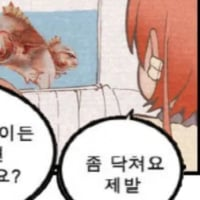

44 · 20 · 9 시간 전 · 원문
힘멜: 프리렌 그런게 있었어...?
수집 당시 댓글 20개
오이쉬 · 22 시간 전
슈타르크도 해줘
↳ 답글 · 씨벌지식정보방 · 22 시간 전
그럼 쥬씨는 츠리렌 줘야지
↳ 답글 · 오이쉬 · 22 시간 전
외국인이야?
됐다https://www.dogdrip.net/727493770
↳ 답글 · 퓨처이즈니어 · 18 시간 전
오들오들
↳ 답글 · 동행복권 · 11 시간 전
어흐
↳ 답글 · Vv연옥의사신vV · 9 시간 전
개추
↳ 답글 · 안녕하세요반갑습니다 · 9 시간 전
마 니 똘개이가 ㅋㅋㅋㅋㅋ
↳ 답글 · 세계는게이가지배한다 · 9 시간 전

시간루팡중 · 22 시간 전
페른은 작아졌는데
↳ 답글 · 안녕하세요개붕입니다잘부 · 7 시간 전
가슴총량의법칙은 어길수없지
ᅟᅠY · 22 시간 전
할망구가 동기화 마법을 배웠나?
지리산반달곰노동조합 · 14 시간 전
진짜네 나두 커졋어
유한매트 · 14 시간 전
와
휘유우우우 · 9 시간 전
슈타르크는 왜 안 커짐?
↳ 답글 · 힝입니다 · 9 시간 전
저게 다 커진거래
요정:인텔 · 9 시간 전
할매 골반도 커졌는데?
↳ 답글 · 도윤회 · 8 시간 전
이것이 간접적으로 보일 때 매력적으로 보이는 마법..
↳ 답글 · 아카이브원 · 27 분 전
똥르가즘 · 7 시간 전
닭장냄새..

슈타르크도 해줘